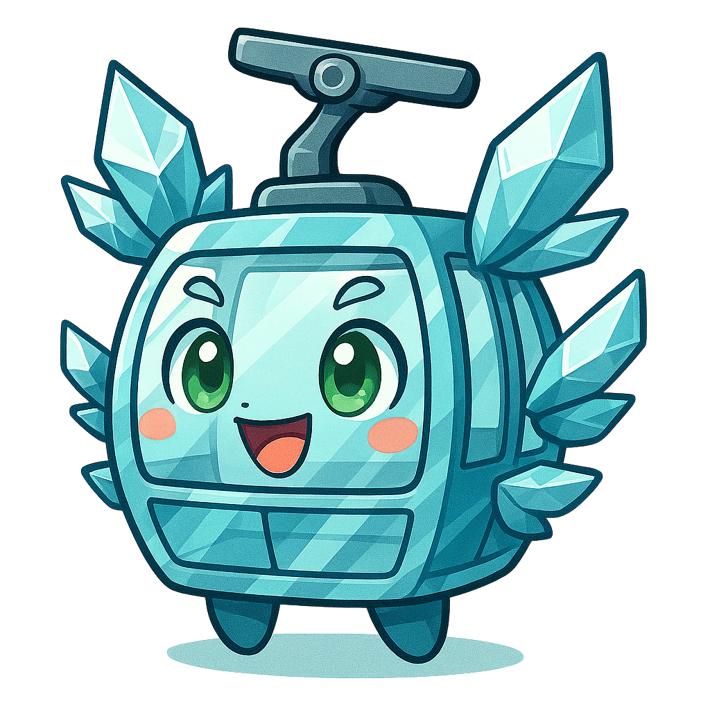

Ngong Ping 360 GO: Unlock the NPmon Map!
Tap the dots on the map to find hidden NPmons in Ngong Ping Village! Super fun Chase!




Cable Cloud (Standardmon) is one of the earliest guardian spirits of Ngong Ping, full of energy and enthusiasm! In the form of a lively cable car, it carries travelers from all over the world, soaring from Tung Chung to Ngong Ping through rolling hills and shimmering straits.
Cable Cloud (Crsytalmon) is a transparent spirit embodied by a crystal cable car, with clear eyes and an adventurous heart, symbolizing an open mind and the courage to take the first step.
Golden Moo Moo is a guardian of Ngong Ping's mountain forests, agile and swift. It loves playing "quick flash games" with people, and only the fastest can become its friend.
Little Yellow BB is a cheerful puppy that loves to jump, run, and chase butterflies. It will take you on a hopping journey to explore every corner of Ngong Ping, full of boundless energy!
Dim Sum Boy is a delivery boy who loves dim sum culture and will introduce you to it through a fun match-three game!
Boba Egg Waffle Mon is a foodie spirit that loves street food culture and will take you on a snake game adventure to explore street delicacies!
Cable Cloud (Crystal+ mon) is a dreamy transparent spirit embodied by a panoramic cable car, the guardian of Ngong Ping's sky views. With the broadest perspective, it loves to observe from high and steady vantage points, watching over distant mountains, seas, and clouds for travelers, serving as the calmest observer on the journey.